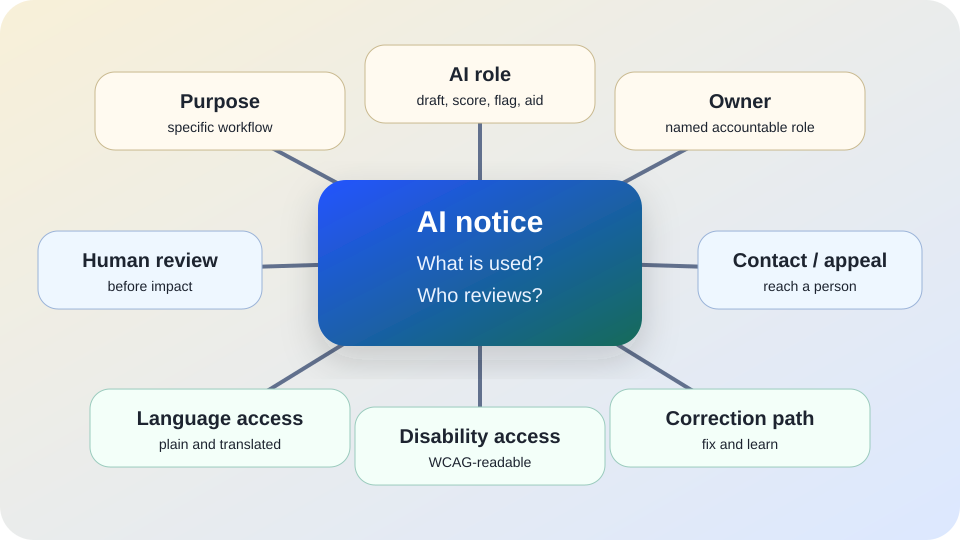

AI transparency
AI public notice template.
Use this when people may be affected by an AI-assisted service, workflow, classroom practice, workplace process, public benefit, complaint system, translation, summary, screening step, or decision support tool.
The short answer
A useful AI notice tells people five things in plain language: AI is involved, what it is used for, what it can affect, who is responsible, and how to reach a human for review, appeal, language access, disability access, or correction.
Notice is not a magic compliance shield. It is a practical trust and safety tool. People should not need to guess that AI shaped a message, score, summary, recommendation, eligibility step, or record about them.

Why notice matters
The NIST AI Risk Management Framework emphasizes governance, mapping context, measuring risks, managing harms, documentation, accountability, transparency, and communication. A notice helps turn those ideas into something affected people can actually use.
OMB Memorandum M-24-10 directs U.S. federal agencies to strengthen governance, risk management, transparency, inventories, and safeguards for agency AI use, especially where rights or safety may be affected. The European Commission’s AI Act overview describes transparency obligations for some AI uses and stronger obligations for high-risk systems. The UK Information Commissioner’s Office guidance emphasizes transparency, accountability, and data protection duties when AI uses personal data.
Use this as public-interest guidance, not legal advice. Real notice duties vary by jurisdiction, sector, public-records law, labor rules, disability law, civil-rights law, privacy law, contract, and whether the AI use is high-risk.
When to provide an AI notice
- AI output may shape a person’s access to education, employment, housing, health, credit, benefits, services, safety, discipline, moderation, legal status, or public participation.
- AI is used to summarize, translate, score, flag, classify, prioritize, recommend, draft, personalize, or route information about people.
- People may reasonably think they are interacting only with a human, or that a record was created only by a human.
- A vendor tool quietly adds AI features to a workflow that already affects people.
- People need a clear path to ask for human review, correction, accommodation, translation, or a non-AI alternative.
Starter notice language
AI use notice: We use [AI tool or AI-assisted process] to help with [specific task]. It may affect [what it may influence], but it may not be used for [off-limits use]. A human [reviews/checks/approves] [what part] before it affects you. The responsible owner is [role/team]. If you have questions, need language or disability access, want a human review, or believe something is wrong, contact [human contact/path] by [methods]. You can ask for [review/appeal/correction/non-AI option] without retaliation or loss of service.
Replace every bracket with local details. If a bracket cannot be filled, the workflow probably needs more governance before it goes live.
What the notice should say
| Field | Plain-language prompt | Why it matters |
|---|---|---|
| AI role | What is AI doing: drafting, summarizing, translating, scoring, flagging, recommending, routing, or deciding? | People need to know whether AI is peripheral or influential. |
| Purpose | What specific service or workflow uses it? | Prevents vague disclosure such as “we use AI to improve services.” |
| Effect | What could it change for a person: message, wait time, eligibility, review, record, recommendation, or next step? | Notice is useful only when people can understand the stakes. |
| Human review | Who checks the output before it affects people, and can they override it? | “Human in the loop” is weak if the human cannot change the result. |
| Owner | Which role or team is accountable for the workflow? | Questions and corrections need somewhere to land. |
| Contact path | How can people reach a person by phone, email, web form, office, or other accessible route? | A notice without a usable contact path is mostly decoration. |
| Review or appeal | How can someone ask for human review, correction, appeal, or a non-AI alternative? | High-stakes workflows need a meaningful way to challenge errors. |
| Data basics | What personal data is used, retained, shared, or avoided? | People need to understand privacy exposure without reading vendor jargon. |
Make the notice accessible
Plain language
Use short sentences, active voice, and examples. Avoid “algorithmic optimization,” “AI-powered intelligence,” or vendor slogans.
Easy to find
Place the notice before or at the point of use, not only inside a privacy policy, procurement file, or terms page.
Language access
Provide translated notice and human interpretation paths when the service reaches people with limited English proficiency or other language needs.
Disability access
Use readable text, headings, sufficient contrast, keyboard-accessible links/forms, captions for media, and non-AI contact options.
Multiple routes
Do not make the only review path a chatbot, an inaccessible form, or the same AI workflow someone is questioning.
Update after change
Revise the notice when the tool, vendor, model, data, purpose, owner, contact path, or stakes change.
Bad signs
- Warning: The notice says “AI may be used” but never says where, why, or what it affects.
- Warning: People are told a human can review the result, but no contact route, timeline, or authority is named.
- Warning: The notice uses vendor marketing language instead of explaining the local workflow.
- Warning: The only way to object, correct, or appeal is through an automated system.
- Warning: The notice exists in one language, one format, or one inaccessible webpage for a diverse public service.
- Warning: The workflow changed, but the public notice, owner, and appeal path did not.
Starter checklist
- □ Name the AI-assisted workflow and its specific purpose.
- □ Say what the AI may affect and what it may not decide.
- □ Name the accountable owner or team.
- □ Explain what human review exists before impact.
- □ Provide a human contact path for questions, review, correction, and appeal.
- □ Provide language access and disability-access routes.
- □ State how the notice will be updated after tool, data, purpose, or owner changes.
- □ Test the notice with someone outside the project: can they explain what AI does and how to reach a human?
Sources and further reading
- NIST — AI Risk Management Framework.
- NIST — Artificial Intelligence Risk Management Framework (AI RMF 1.0).
- U.S. Office of Management and Budget — M-24-10: Advancing Governance, Innovation, and Risk Management for Agency Use of Artificial Intelligence.
- European Commission — AI Act overview.
- UK Information Commissioner’s Office — Guidance on AI and data protection.
- W3C — Web Content Accessibility Guidelines (WCAG) 2.2.